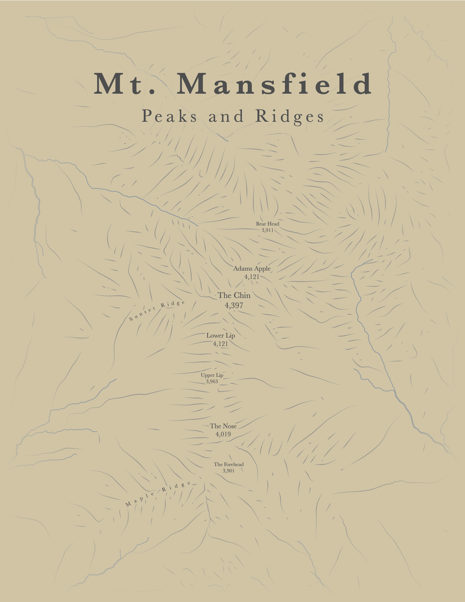
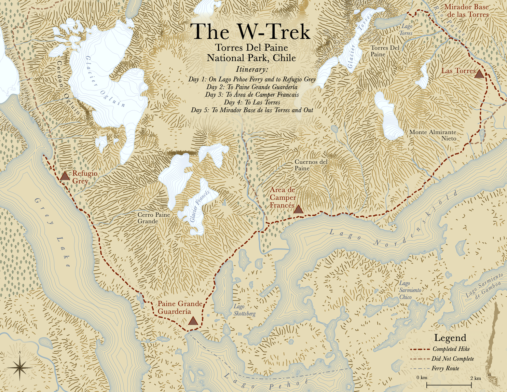

Hachure Maps
When I took my introduction to cartography class, I became quite invested in older-looking maps — specifically the hachure style. I discovered Daniel Huffman’s technique for hachure generation and decided to put it to the test. I’ve made a series of maps with it since, most notably a map of Aoraki / Mount Cook for my cartography final project. I love the old-school style that hachure maps have, and they’re a fun project to pump out in a day or so when I get the chance to make a quick one.

